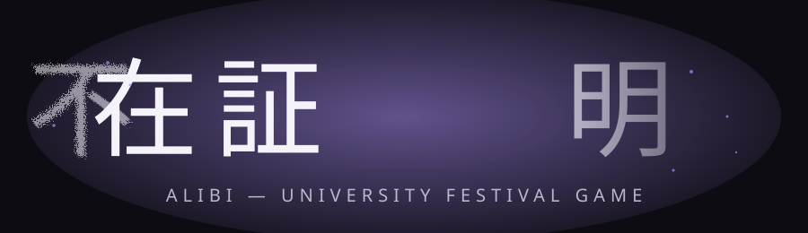
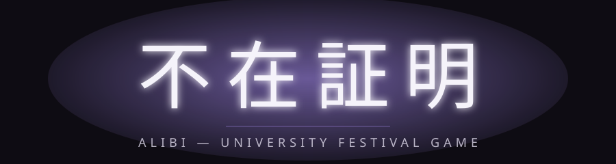
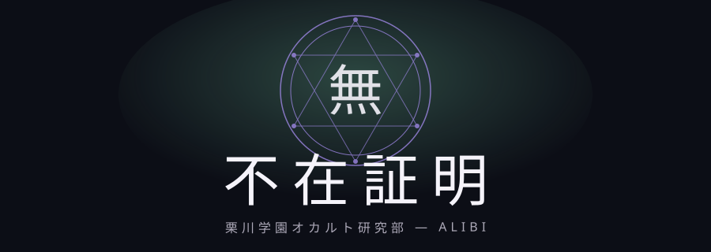
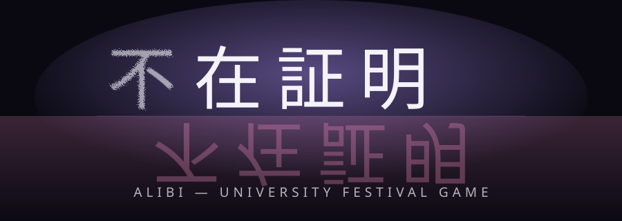

1欠けた文字

1文字目「不」がノイズで崩れ、最後の「明」が右へフェードアウトする。「存在の欠如」を文字そのものの破綻で表現。
2鏡・対称の割れ
下半分に反転した鏡像（青みがかった別の色）を配置し、ひび割れラインを追加。「鏡の中のもう一つの部」の世界観と直結。
3シンプル明朝＋発光

現行のタイトル画面の延長線上。派手な演出はせず、発光と一本線の装飾のみで完成度を上げた版。
4学園モチーフ（紋章）

六芒星の魔法陣風サークルに「無」の一文字を配し、オカルト研究部らしさを強調。サブタイトルに学園名も明記。
5欠けた文字 × 鏡の割れ（複合）

パターン1と2の要素を統合。1文字目の欠落＋下半分のピンク寄り鏡像で、二つのテーマを同時に表現。